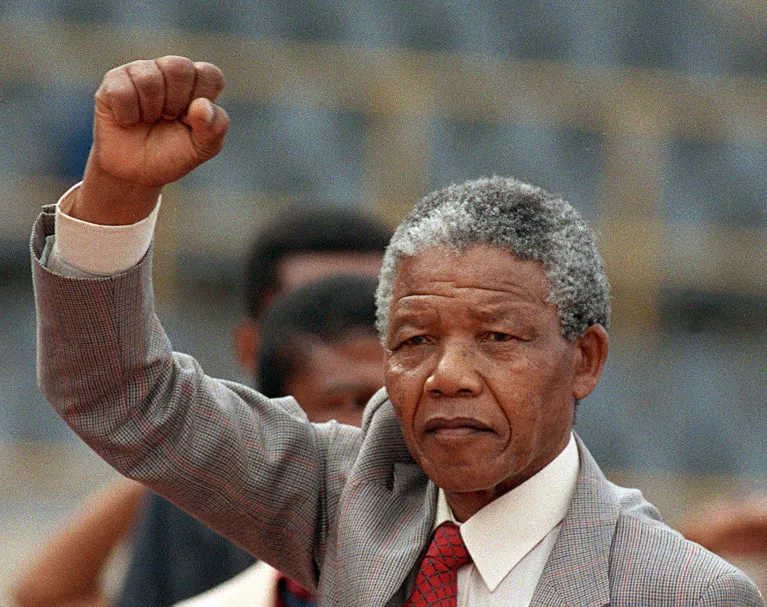

Known and loved around the world for his commitment to peace, negotiation and reconciliation, Nelson Rolihlahla Mandela was South Africa's first democratically elected president (1994-1999). Mandela was an anti-apartheid revolutionary and political leader, as well as a philanthropist with an abiding love for children. Mandela was born into the Xhosa royal family on 18 July 1918 and died on 5 December 2013.
Rolihlahla Mandela was born into the Madiba clan in the village of Mvezo, in the Eastern Cape, on 18 July 1918. His mother was Nonqaphi Nosekeni and his father was Nkosi Mphakanyiswa Gadla Mandela, principal counsellor to the Acting King of the Thembu people, Jongintaba Dalindyebo. In 1930, when he was 12 years old, his father died and the young Rolihlahla became a ward of Jongintaba at the Great Place in Mqhekezweni. Hearing the elders’ stories of his ancestors’ valour during the wars of resistance, he dreamed also of making his own contribution to the freedom struggle of his people.
For more details, visit artsandculture.google.com